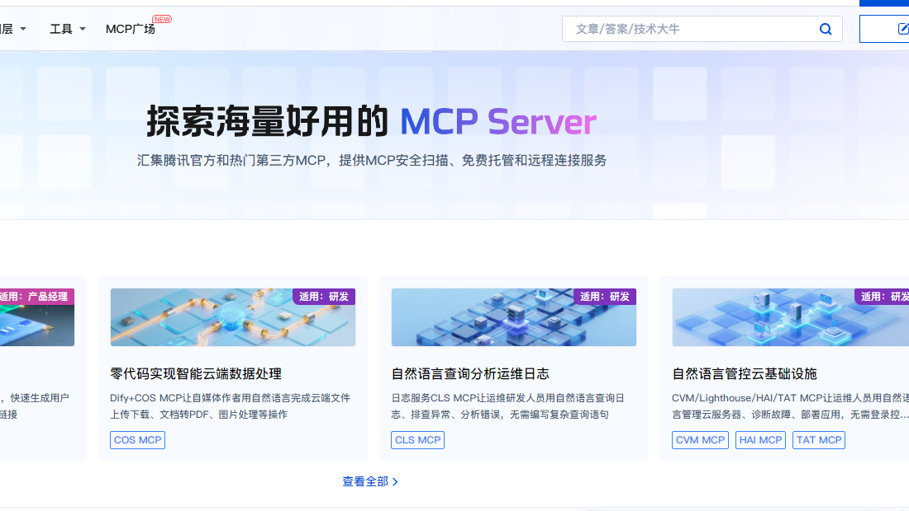
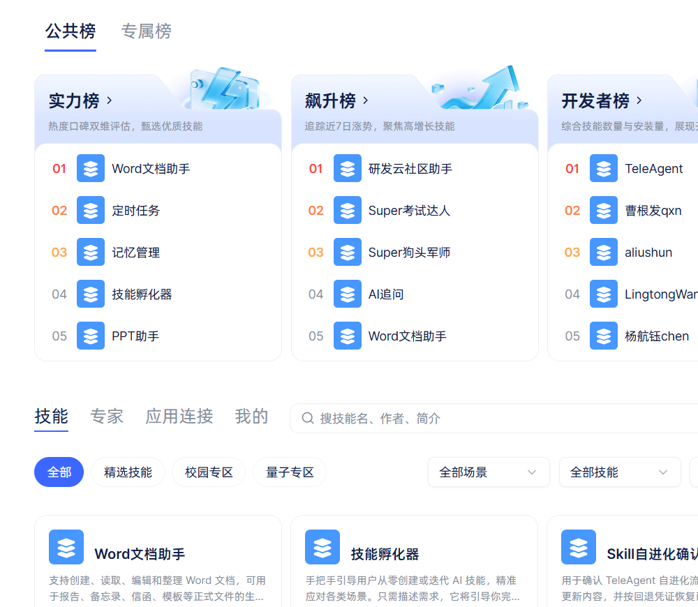

工具长出两个新形状：MCP 与 Skill
上一课你手写了一个 agent，工具只有两个。三五个还行，再多就撞墙：别人写好的工具怎么接？做过的活，怎么让下一次不用从头教？
这一课讲工具长出的两个新形状：MCP 是标准插口，Skill 是做法包。前半讲清原理，后半在 TeleAgent 里真的配一个 MCP、建一个技能。
学完这课，你能：说清 MCP 的三个角色和一次"发现 → 调用"；分清本地/远程，在 harness 里填对配置并验证；用 TeleAgent 创建一个技能、测它、改它；避开最常见的翻车点。
MCP 管"怎么接"：工具写一次，任何支持 MCP 的客户端都能接。Skill 管"怎么做"：把一类事的步骤、输出格式、翻车怎么救打包成文件。
一个是插口，一个是菜谱。
（后半有 TeleAgent 的跟做步骤；不跟做也能读懂原理。）
1. 先看问题：工具写不完，做法教不会
第 2 课的工具是一个个手写的：函数、说明、参数，全在你的程序里。这在小规模时没问题，但很快会撞两堵墙：
- 工具写不完：想用别人写好的天气、搜索、数据库、发邮件，每家的调用格式都不一样；N 个应用接 M 个工具，最笨的做法是写 N×M 份适配。
- 做法教不会：光有工具不够。你想让 agent 每次都按你们团队的规范写周报、审合同、做海报——这些"步骤和判断"不在工具里，也不该每次都重讲一遍。
两堵墙对应两个新形状：MCP 解决"工具怎么接"，Skill 解决"做法怎么打包"。
2. MCP：给工具定一个统一插口
MCP（Model Context Protocol，模型上下文协议）是一套开放标准：让"提供工具的一方"和"用工具的一方"说同一种话。类比插座标准：以前每台电器配一个专用插头，现在统一成国标，任何厨房都能插任何电器。
三个角色：host、client、server
- MCP host：你用的 AI 应用 / harness（TeleAgent、Claude Desktop、IDE 插件都算）。它负责管连接、把工具交给模型。
- MCP client：host 内部的一个连接器。host 给每个 server 建一个 client，各管一条连接。
- MCP server：真正提供能力的程序。它可以在你本机跑（本地），也可以在别人的服务器上跑（远程）。
server 不是模型。它不负责"想"，只负责"提供"：能执行的动作（tools）、能读的数据（resources）、可复用的提示词模板（prompts）。
MCP client 是 harness 内置的：TeleAgent、Claude Desktop 这些 host 已经把 client 装好了；你要做的只是给它一份 server 配置——不用自己写 client。

一次「发现 → 调用」长什么样
MCP 的底层是 JSON-RPC 2.0：客户端发一个带方法名的请求，server 回结果。新版协议还是无状态的——每个请求自己带版本和能力，server 不靠"上一次连接"猜。
连上之后，第一件事不是让模型调工具，而是发现：
client → server: server/discover # 你支持什么版本、有哪些能力
client → server: tools/list # 有哪些工具
server → client: tools: [名字 + 说明 + 参数 schema, ...]
client → server: tools/call {name, arguments}
server → client: content: [...] # 执行结果发现是 MCP 的灵魂：工具不是硬编码进 prompt 的，客户端连上先问"你能干什么"，把工具清单拿回来，再交给模型。server 公布的三样东西各管一件事：
- tools：能执行的动作（查天气、发邮件、跑 SQL）；模型选的是它。
- resources：能读的数据（文件、数据库记录、接口返回）；更像"资料"，不是"动作"。
- prompts：可复用的提示词模板；让 server 把"该怎么问"也一起提供。
工具清单还可能变：server 可以开一个订阅，工具增删时通知客户端刷新。所以客户端不能只在启动时抄一次清单。
先分清：本地 server，还是远程 server
server 跑在哪，配置就长什么样：
| 本地 server | 远程 server | |
|---|---|---|
| 跑在哪 | 你电脑上的一个进程 | 服务商的服务器 |
| 传输 | stdio（标准输入/输出） | Streamable HTTP |
| 配置 | command + args（+ env） |
URL + 鉴权（字段看客户端） |
| 要 npx 吗 | 常见：npx / uvx 启动 |
不需要 |
| 例子 | 文件系统、数据库、数学运算 | 腾讯云 Hosted、阿里云 One Key |
所以"远程也是这么配"是误会：command/args 是本地 stdio 的写法；远程 server 给的是 URL/鉴权，不需要 npx。支持远程 server 的客户端会给你 URL/鉴权的位置；Hosted 模式的广场页一般直接提供"接入配置"可复制。具体字段以你用的客户端文档为准。
配置：一份 mcpServers JSON
配置不是给模型看的，是给客户端看的：它告诉 harness"怎么启动/连上这个 server"。不同客户端的字段略有出入，但本地 server 最常见的形状是 mcpServers。下面这份例子是本地 stdio 的形状：
{
"mcpServers": {
"math-server": {
"command": "npx",
"args": ["-y", "@modelcontextprotocol/server-everything"]
}
}
}这份例子来自 TeleAgent 的官方手册：math-server 是服务名，command 是启动命令，args 是传给命令的参数。远程 server（Streamable HTTP）一般填 URL 和鉴权信息，字段各家客户端不一样，以客户端文档为准；下面这张表是本地 stdio 的形状。字段口径：
| 字段 | 类型 | 必填 | 说明 |
|---|---|---|---|
mcpServers |
对象 | 是 | 所有 MCP 服务的入口；里面每个键是一个服务 |
| 服务名（键） | 字符串 | 是 | 服务的唯一标识；建议小写字母、数字、连字符 |
command |
字符串 | 是 | 启动 server 的可执行命令（npx / python / node） |
args |
数组 | 是 | 传给 command 的参数列表 |
env |
对象 | 否 | 注入 server 进程的环境变量，例如 API key |
本地这份形状，各家入口不同：Claude Desktop 读的是 claude_desktop_config.json；TeleAgent 是在设置里粘贴这份 JSON。字段名和位置以你用的客户端文档为准。
在 TeleAgent 里配（按它 2026-10-18 的手册）：
- 头像浮窗 → 设置 → 工具设置 → 从 JSON 导入/添加。
- 粘贴上面的 JSON（根对象要有
mcpServers）→ 保存。 - 看状态：连上的 server 会出现绿色的「已连接」；首页的 MCP 按钮能看到正在用的 server。
- 在工具列表里可以连接 / 断开 / 编辑；改完保存会重新验证。⚠ 工具名改过之后，历史任务可能引用不到旧名字。
- 回到对话，直接说"算一下 2+3"——它会先发现工具，再调。
远程 server：只配 URL 和鉴权
远程 server 不启动本地进程，配置里没有 command/args。下面是腾讯云 CloudBase 的 Hosted 模式示例（官方文档）：
{
"mcpServers": {
"cloudbase": {
"type": "http",
"url": "https://tcb-api.cloud.tencent.com/mcp/v1?env_id=YOUR_ENV_ID",
"headers": {
"X-TencentCloud-SecretId": "YOUR_SECRET_ID",
"X-TencentCloud-SecretKey": "YOUR_SECRET_KEY"
}
}
}
}看三样：type 是 http；url 是服务地址；headers 放鉴权。没有 command，也没有 npx。
不同客户端的字段名不一样：有的写 streamable-http，有的把鉴权放 headers 或环境变量。以客户端文档为准；TeleAgent 这一版手册只给了本地 stdio 示例，远程是否支持、字段叫什么，要看对应版本。
配置最常见的问题
command找不到：npx要先装 Node.js；python不在 PATH 也一样。先在终端手动跑一遍command+args，能跑通再填。- JSON 语法错：多一个逗号、少一个引号、
args写成字符串——这几种最常把整份配置弄挂。粘贴后先用格式化工具过一眼。 - 路径是相对的：本地 server 的参数里要塞绝对路径，尤其 Windows 的反斜杠；相对路径会以 harness 的工作目录为基准，容易找不到。
- key 没进
env：需要鉴权的 server，把 key 放env，别写进args或对话里。 - 连上但模型不调：先看工具清单有没有发现成功；再看工具说明写得够不够清楚（本课的「工具描述五件套」）。
- 改名/换配置后旧对话失效：工具名变了，历史任务里的引用就对不上——改名前想清楚。
安全：只接可信的 server
本地 MCP server 是以你的用户权限运行的：它能读写你读写得到的东西。官方文档专门提醒，只给你愿意让它碰的目录；TeleAgent 的 skill 导入有安全审查，MCP 这边则要靠你自己把关：
- 只用可信来源的 server；不明来源的 JSON/命令先别粘。
- 给最小权限：只挂需要的目录/数据库，不用的工具断开。
- 密钥放
env，不写进对话、不提交到 git。
什么时候不该用 MCP
三个工具、自己用、只在一份脚本里跑——直接写函数最省事。MCP 的价值在复用和发现：多个客户端要接同一个能力、或者想把工具交给别人用时，才值得多这一层。接得越多，清单越长、上下文越贵，也要给每个 server 一份信任。
顺带：工具描述至少写五样
不管工具是你自己写的、还是 MCP 接来的，模型看到的只有名字和说明。这五样少一样，调用就容易出问题：名字（动词＋名词，一眼看懂）· 说明（干什么＋什么时候用）· 参数（类型、必填、示例）· 返回什么（结构、单位）· 出错怎么说（错误信息要能让模型看懂并改）。名字和参数决定调不调得对，返回值和错误信息决定它调完看不看得懂。
3. Skill：把「怎么做这类事」打包
Skill（技能）不是"一个函数"，是"做某一类事的完整做法"：一个目录，里面装着指令 + 可能的脚本 + 参考资料。类比菜谱：厨具（工具）告诉你"能切能炒"，菜谱（skill）告诉你"红烧肉该怎么做、什么时候放糖、糊了怎么办"。

name／description 进上下文；模型决定用，才读 SKILL.md 正文；正文提到别的文件，再按需打开。长什么样
weekly-report/
SKILL.md ← 入口：frontmatter + 正文
reference.md ← 补充资料，用到才读
scripts/
collect.py ← 可选：确定性步骤交给脚本---
name: weekly-report
description: 当用户说「写周报」「汇总本周工作」时，按团队模板生成周报。
---
# 周报
## 什么时候用
...
## 怎么做
1. ...
## 输出格式
...
## 失败怎么救
...SKILL.md 头部的 YAML 叫 frontmatter，name 和 description 是必填。正文是第二层：什么时候用、怎么做、输出什么、出错怎么办。
渐进式加载：平时只带目录
- 平时：每个已安装 skill 的
name＋description进系统提示。只有这层元数据。 - 模型觉得用得上：才打开
SKILL.md正文。 - 正文提到某个文件：再按需打开那个文件，或运行里面的脚本。
为什么非要这样？因为上下文是稀缺资源：进上下文的东西都要花钱、占位置、还会互相干扰（LLM 底层第 3 课讲过）。渐进式加载就是"不看不用的，连打开都不打开"——和 RAG 是同一个思想：按需取资料，而不是把整份文档塞进去。
用 TeleAgent 创建一个技能（跟做）
这一步就是 skill-create：TeleAgent 把它做成两个入口——技能广场右上角的【创建技能】，或者直接 @技能孵化器（手把手引导你从零创建或迭代）。入口名各家 harness 可能不同，产物都是 SKILL.md。
第 1 步：想清一件事和一个触发点。别一上来"帮我做个万能助手"。先定：这个技能只干什么？用户说什么话时该用它？
第 2 步：点【创建技能】，用自然语言把需求说全。可以照这个模板：
帮我创建一个技能：
- 名字：weekly-report
- 什么时候用：用户说「写周报」「汇总本周工作」时
- 输入：本周的日报/任务记录/提交记录
- 步骤：先汇总完成项，再列风险，最后写下周计划
- 输出格式：Markdown，三段：本周完成 / 风险 / 下周计划
- 边界：缺数据就先问，不要编；不写与工作无关的内容第 3 步：等它生成，去「我的技能」里启用。生成后会自动加到"我的技能"；只有启用的技能才能被 @ 引用。启用上限是 50 个——别把不用的都开着。
第 4 步：先手动 @ 它，别靠自动匹配。在输入框点技能按钮，或输入 @ 选；例如：
使用 @weekly-report，把这周的日报汇总成周报。官方手册明确说：不指定技能时系统会自动选，但匹配不如手动指定准。第一次测试、以及技能很多时，先手动 @。
第 5 步：看它怎么用，再改。用 3 个真实任务测：两个"该触发"、一个"不该触发"。看它哪一步跑偏，回去改 description 或正文（也可以让 @技能孵化器 帮你迭代）。TeleAgent 里还能看技能详情、评分；同一技能用满 20 次会触发"技能自进化"，改完可以更新到广场。
另一种：导入现成的 skill。技能广场 → 导入技能，支持 .zip／.skill；根目录必须有 SKILL.md，头部 YAML 写 name 和 description，文件不超过 10MB。导入时会过安全审查，有风险会提示；通过后出现在"我的技能"。
创建技巧：让它真的会被用、用得对
description是第一开关：写"做什么 + 什么时候用"，最好带上用户真会说的词（"写周报""汇总本周工作"）。只写"一个周报工具"等于没写。- 一个 skill 只干一件事：既写周报又审合同，触发词会打架，正文也会互相干扰。拆成两个。
- 正文写成操作手册：输入、步骤、输出格式、失败怎么救。模型不是同事，不会自己补你们团队的默认规矩。
- 长内容往外挪：模板、长表格、参考资料放
reference.md；确定性步骤放脚本。正文保持短，才省上下文。 - 给例子：一段"输入 → 期望输出"的样例，比十句形容词管用。
- 用真实任务迭代：先跑 3 个真实任务，再改；不要凭想象一次写完。Anthropic 的建议也是"从评估开始，观察它在哪卡住，再补 skill"。
- 安全：导入的技能可以带指令和脚本，等于别人给你装了一段程序。只装可信来源，装前读一遍
SKILL.md和脚本。
常见问题
- 技能不被触发：先看
description有没有写"什么时候用"；再试手动@；最后看它是不是被停用了、启用数是不是满了 50。 - 不该用的时候硬用：
description写太宽（"处理文档"），把范围收窄，或拆成多个技能。 - 输出格式不对：正文里没写清模板/例子；补"输出格式"一节，给一段样例。
- 导入失败：不是
.zip／.skill、根目录没有SKILL.md、YAML 写坏、超过 10MB——按这四条查。 - 改了没生效：改完要保存/更新；旧任务可能还引用旧版本，新开一个任务再测。
- 脚本跑不起来：依赖没装、路径写死、工作目录不对；先在本机手动跑通脚本，再放进 skill。
- 技能太多互相抢：只启用常用的；触发词重叠的合并或拆清。
4. 去哪里找现成的 MCP 和 Skill
不用从零写。下面是国内常用的入口（2026-10-18 看；产品会变）。先看格式和权限，再安装：MCP 分本地/托管，Skill 格式各家不完全一样。
MCP 广场
- 腾讯云开发者 MCP 广场（cloud.tencent.com/developer/mcp）：官方 + 第三方；每个 server 标 Local 模式（本地跑，常见
uvx／npx）或 Hosted 模式（免费云托管，远程连接）。 - 阿里云百炼 MCP 广场（文档）：One Key MCP 首次调用自动生效；服务详情页可复制接入配置、或一键配置到客户端，用
DASHSCOPE_API_KEY鉴权。 - ModelScope 魔搭 MCP 广场（modelscope.cn/mcp）：社区 MCP；按页面给的配置接。

Skill 广场 / 技能中心
- TeleAgent 技能广场（软件内）：官方 + 社区技能；可以搜“技能孵化器”让 AI 带你创建/迭代，也可以在“我的”里管理创建和导入的技能。
- ModelScope Skills 技能中心（modelscope.cn/skills）：浏览技能；下载后按你的 harness 要求导入。
- 阿里云百炼 Skill 管理（文档）：官方 Skill 添加即用；自定义 Skill 上传 ZIP（根目录
SKILL.md，≤10MB，自动审查）。

安装前问三句：格式对得上吗（ZIP + SKILL.md？还是某个平台自己的插件？）· 要什么权限（API key、本地文件、云账号？）· 来源可信吗（技能里的指令和脚本会以你的权限跑）。
5. 三样东西，一张表看清
| 工具 | MCP | Skill | |
|---|---|---|---|
| 是什么 | 一个函数 | 一套接口标准 | 一个"做法包" |
| 解决什么 | 让模型能动手 | 让工具能被任何客户端接上 | 让 agent 会做某类事 |
| 里面有什么 | 代码 | 协议 + 描述 | 指令 + 脚本 + 资料 |
| 怎么被发现 | 你写在 prompt 里 | 自动发现 | description + 按需加载 |
| 类比 | 厨具 | 插座标准 | 菜谱 |
6. MCP 还是 Skill？先看"谁在用它"
看到这里，很容易冒出一个问题：两个都能让 agent 用上外部能力，是不是重复了？
先给结论：本地的 MCP 和带脚本的 Skill，功能上确实有重合。一个本地 MCP server 本质上是"跑在本机的程序，通过 stdio 把能力暴露出来"；一个 Skill 也可以带脚本，让 agent 在本机跑。只服务一个 harness、只给一个团队用，很多本地 MCP 确实可以用 Skill + 脚本替掉。
但"重合"不等于"一样"，差别在它们站的位置：
- Skill 站在"怎么做"这一层：它是给某个 agent 加载的说明书 + 可选脚本；模型决定用不用它，脚本由 agent 的代码执行能力跑。它不对外提供标准接口，换个客户端不一定认得。
- MCP 站在"怎么接"这一层：它是 host/client/server 之间的标准协议；工具、资源、提示词可以被发现，可以被多个客户端接，server 可以是本地进程，也可以是远程服务。
- 技能里的脚本通常不会像 MCP 工具那样，作为带 schema 的可调用工具注册给模型：模型看到的是"这个技能可用"，然后按正文去执行脚本；MCP 的工具则直接带名字、说明、参数，模型照着挑。
有一种常见的说法："自己的数据只能让别人有限制地读，所以只能用 MCP。"这话只说对了一半。鉴权、限流、隔离确实是 MCP 的强项；但一个 Skill 脚本也能带 token 去调你的内部 API。真正的分界不是"有没有鉴权"，而是下面这些：
| 场景 | 更合适 |
|---|---|
| 只有一个 harness、一个团队，工具只跑本地脚本 | Skill + 脚本（更轻） |
| 同一能力要给多个客户端/多人用，或要能"被发现"、有稳定 schema | MCP |
| 数据在远程，要鉴权/限流/隔离，凭据不想进模型上下文 | MCP（server 关着凭据） |
| 要教 agent"什么时候用、按什么步骤做、输出什么格式" | Skill（流程里可以调 MCP 工具） |
| 要模型直接看到一个可调用函数（名字/说明/参数） | MCP 工具（或 harness 内置工具） |
| 一次性小工具，只有你一个人用 | 直接写函数，别上 MCP/Skill |
一句话：Skill 管"这件事怎么做"，MCP 管"这个能力怎么被接上"。两者不是替代关系，常常是配合：Skill 写流程，流程里调 MCP 工具；或者先用 Skill 脚本快速跑通，等要被多个客户端复用时再抽成 MCP server。
7. 检查一下你懂了没
Q1 MCP 主要解决的是什么问题？
Q2 MCP 里的 server 是什么？
Q3 本地 MCP server 和客户端之间，最常见走什么？
Q4 mcpServers 配置里，哪些字段是必填的？
Q5 模型决定"要不要用某个 skill"，第一依据是什么？
Q6 为什么 skill 要做"渐进式加载"？
Q7 技能明明装了，却怎么都不触发，先查什么？
Q8 导入一个别人做的 skill，哪条要求是对的？
Q9 工具和 skill 的分工是什么？
Q10 远程 MCP server 一般怎么配？
Q11 MCP client 是谁提供的？
Q12 只有一个 harness 用、只跑本地脚本的小工具，最省事的做法是？
Model Context Protocol — Architecture overview：host／client／server 三个角色、stdio／Streamable HTTP 两种传输、JSON-RPC 与 tools／resources／prompts、发现与调用。
Anthropic — Equipping agents for the real world with Agent Skills：Skill 的目录结构、三层渐进式加载，以及"从评估开始、按真实任务迭代"的创建建议。
天翼 AI — 星辰超级智能体·桌面版操作手册：本课的 TeleAgent 配置步骤与创建技能流程（工具设置→从 JSON 导入；技能广场→创建技能；导入要求；自进化 ≥20 次；启用上限 50），2026-10-18 抓。
前置：Agent 篇 · 第 2 课 · 手写一个 agent（工具清单在那里第一次出场）
顺着往下：Agent 篇 · 第 4 课 · 多 agent 与安全（什么时候叫帮手、怎么不出事）
LLM 底层：第 3 课 · KV Cache（"按需加载"省的就是这个）
术语表：工具 · MCP · Skill